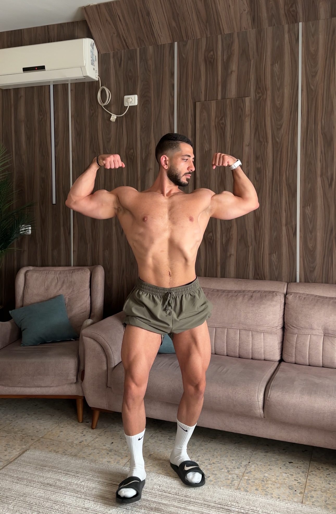
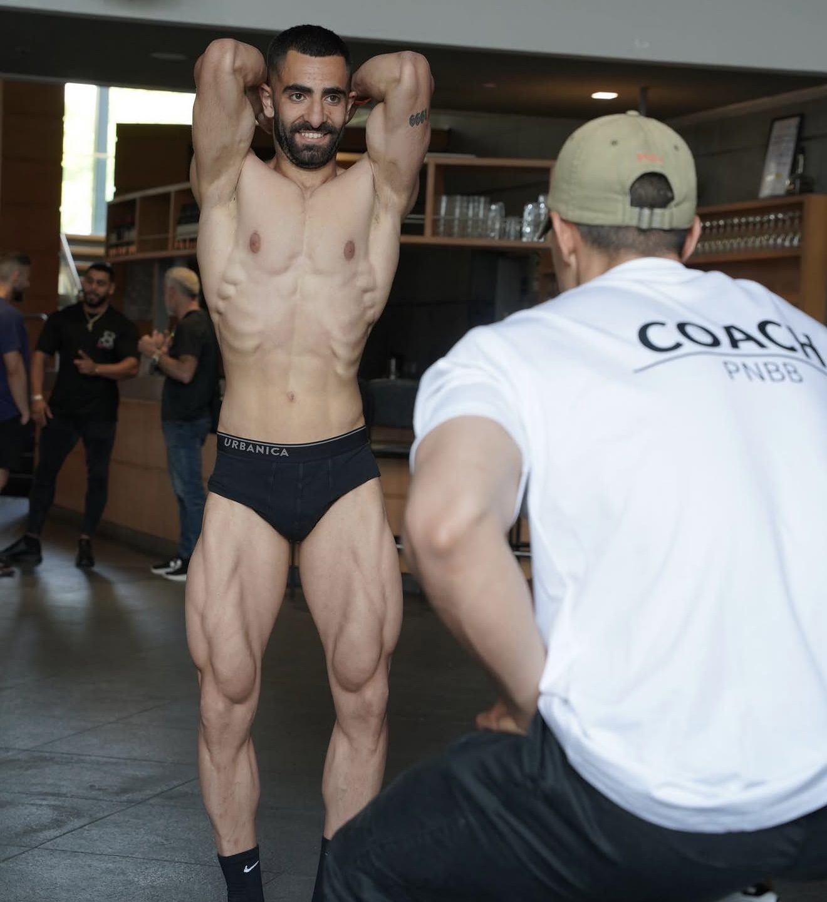
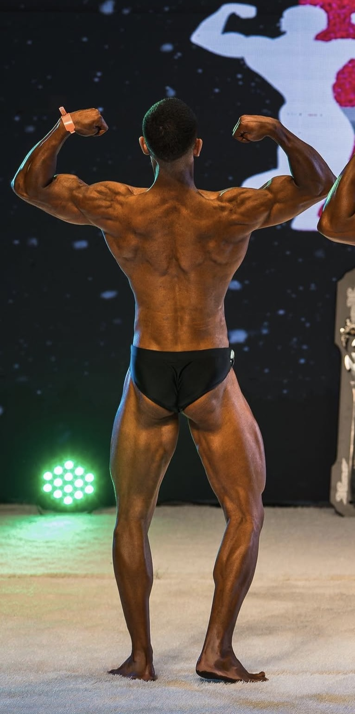

התאמה אישית
התוכנית נבנית בהתאם לניסיון שלך, למטרות, לזמינות, לציוד ולשגרת החיים שלך.
ליווי אישי למתאמנים טבעיים
תהליך שנבנה סביב המטרות, המגבלות והשגרה שלך.
הדרך שלי כספורטאי התחילה במגרש הכדורגל, תוך כדי שירות הצבאי נחשפתי לעולם הפיתוח גוף ואימוני הכוח, ושם התאהבתי בתהליך, בשיפור העצמי והמשמעת.
אחרי השירות הצבאי לקחתי את זה צעד קדימה, עברתי הכשרת מאמנים והפכתי את התשוקה לקריירה, כמפתח גוף - אני מתחרה בפיתוח גוף טבעי (באיגוד WNBF) משנת 2019 ועד היום.
אני מאמין בלמידה בלתי פוסקת ועבודה קשה, זכיתי לעבוד במשך השנים תחת כמה מהמאמנים המובילים בפיתוח גוף בארץ ובעולם, משהו שעזר לי לרכוש המון ידע וניסיון והפך אותי למאמן ולמתאמן שאני היום.
כמאמן, מעבר למקצועיות הנדרשרת, אני מאמין בבניית מערכת יחסים איכותית עם המתאמנים שלי, שבנויה על שקיפות, ותקשורת טובה בטווח הארוך.
הגישה שלי
המטרה היא לא רק להגיד לך מה לעשות, אלא גם להסביר לך את ה-למה מאחורי הדברים שעושים, להפוך אותך למתאמן טוב ועצמאי יותר.
התוכנית נבנית בהתאם לניסיון שלך, למטרות, לזמינות, לציוד ולשגרת החיים שלך.
קביעת / תכנון מטרות קדימה, מעקב מסודר אחרי ההתקדמות שלך בביצועים, והמדדים הנדרשים מסביב
תהליך טוב בנוי על שיח ישיר, אחריות משותפת והבנה ברורה של הצעד הבא.
המפתח להצלחת התהליך נמצא בעבודה קשה ועקבית.
בדיקת התאמה
כדי לשמור על איכות הליווי, חשוב שתהיה התאמה בין המטרות שלך לבין דרך העבודה שלי.
איך מתחילים
נכיר את הרקע שלך, המטרות, שגרת האימונים והציפיות כדי להבין האם נכון לעבוד יחד.
נאסוף את המידע הרלוונטי ונבנה מסגרת אימונים ותזונה שמותאמת אליך.
ניהול מעקב אחרי ההתקדמות, ניתוח ביצועים, ביצוע שינויים בתוכנית במידת הצורך
מעבר להשגת המטרות, חשוב לי לתת לך את הכלים שיעזרו לך לבנות עצמאות כמתאמן ולהיות מתאמן טוב יותר
תוצאות ותהליך
גרור את המחוון כדי לעבור בין Before ל־After.




כלי עזר
בדיקה מהירה של BMI, קלוריות תחזוקה וחלבון יומי מומלץ. זה לא מחליף ליווי אישי, אבל נותן כיוון ראשוני.
הצעד הראשון
השאלון יעזור ליאמן להכיר את הרקע שלך, המטרה, שגרת האימונים וההתנהלות התזונתית. כל התהליך מתבצע בתוך האתר.
הפרטים נשמרים במערכת האתר ונגישים למאמן בלבד.